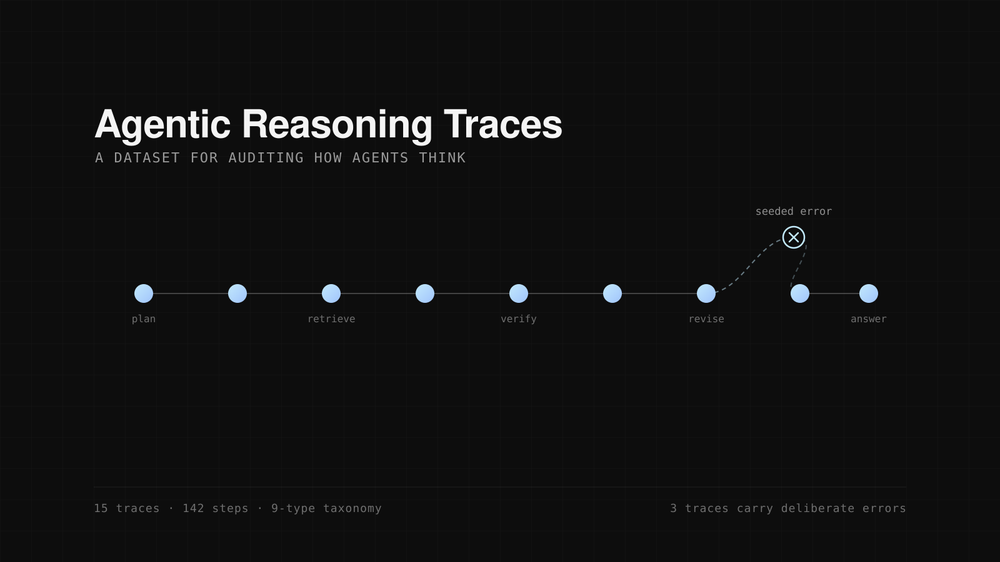

Agentic Reasoning Traces
If you want to evaluate whether an agent reasons well, you need examples of reasoning labelled at the level of individual steps, not just final answers marked right or wrong. An agent can reach the correct answer through a chain that is mostly luck, and a step-level view is the only thing that shows it.
So I built the dataset by hand: 15 traces, 142 individual steps, each classified under a nine-type taxonomy covering things like planning, retrieval, verification and revision. Five traces are autobiographical, recording how I actually worked through a problem. The other ten are synthetic.
Three of the traces carry deliberate errors. A dataset where every trace is clean tells you nothing about whether your auditing process can catch a bad step. Seeding known failures gives you a control: if the evaluation misses those, it is not measuring what you think it is measuring.
The habit it taught me, planting known failures so you can tell whether your instrument detects them, is the same instinct that later caught twenty-one bugs in the world models benchmark.
- Stack
- Hand-authored · nine-type step taxonomy
- Status
- Complete
- Year
- 2026
- Code
- ReasoningTraces

Next: ByTheWay